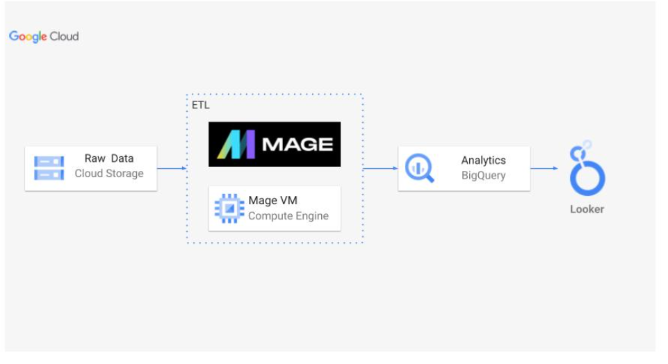
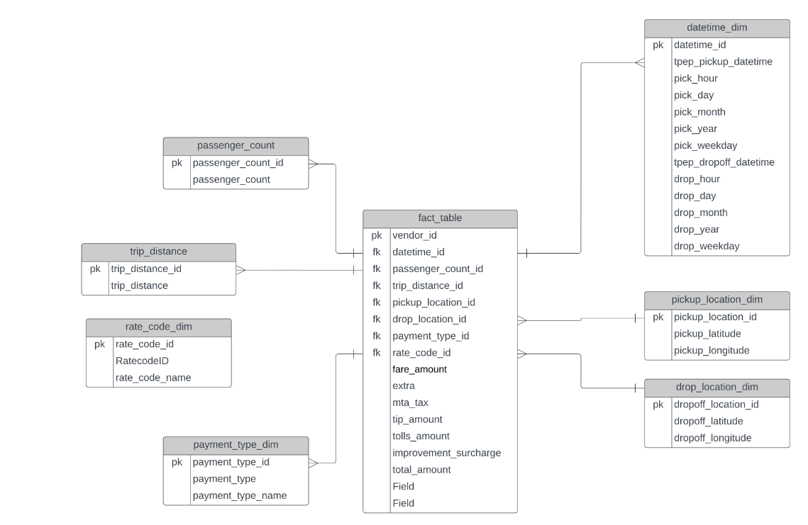
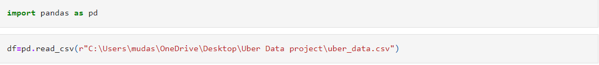
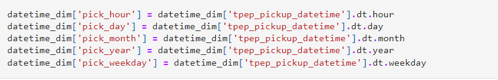
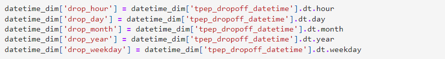
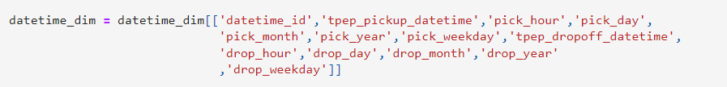
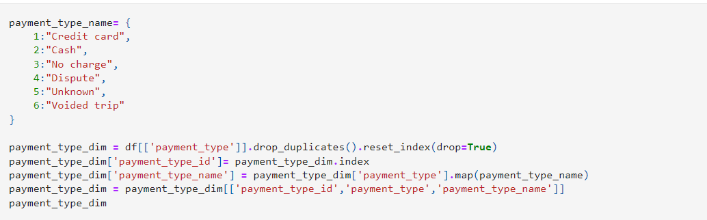
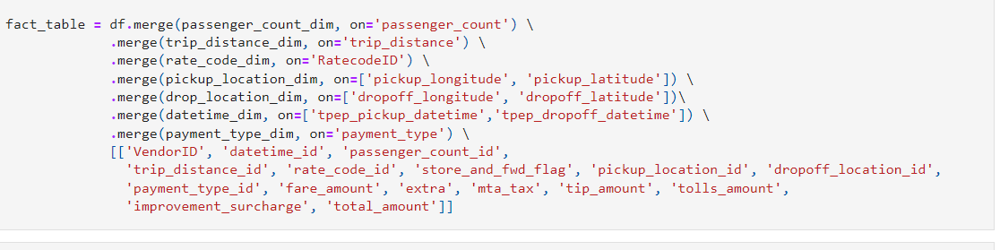
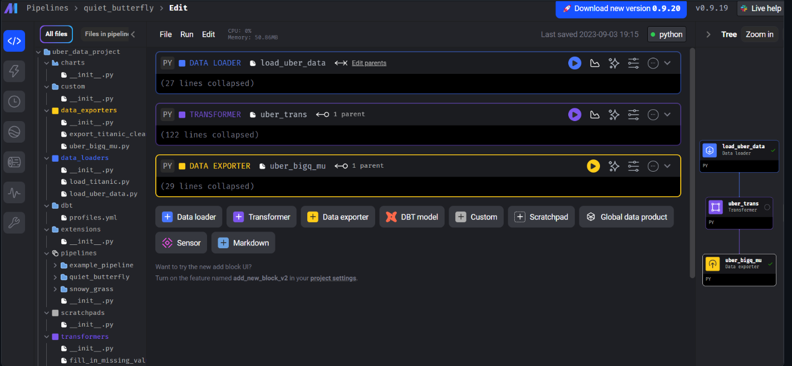

Transform Uber's raw taxi data data into actionable insights.
This project focuses on building an ETL pipeline and performing data analytics on Uber data using various tools and technologies, including GCP Storage, Python, Compute Instance, Mage Data Pipeline Tool, Big Query, and Looker Studio. The project involves an end-to-end data pipeline, starting from data ingestion to constructing data cubes to illustrate complex entity relationships and fulfill OLAP (Online Analytical Processing) needs for advanced data analysis and reporting by building a comprehensive analytical dashboard.
Architecture
Raw data (cloud) -> ETL[Mage , Mage VM] -> Analytics[BigQuery] -> LookerStudio
Data Model Overview
The provided Entity-Relationship Diagram (ERD) represents the logical structure of the Uber trip data for this analytics project. It consists of a central fact table linked to several dimension tables, which together facilitate a comprehensive and scalable data analysis framework. The ERD ensures that data is systematically organized, with clear relationships between tables. This structure maintains data integrity and consistency, which is vital for accurate analysis and reporting.
This data model is a critical component of the project's architecture, ensuring that the data is well-organized, accessible, and primed for comprehensive analysis and business intelligence
Transforming the data
Objective: Clean and structure the raw trip data to ensure it is ready for analysis.
Import the data into Jupyter notebook in order to transform the data and create FKs and PKs as well as create neccessary columns as defined in the ERD.
Creating hour, day, month, year and weekday columns for the datetime dimension.
  Creating payment type dimension using dictionary for payment type name.
Similiarly, other dimension are created. Visit my Github page to see more.
A series of merge operations is being performed to create a consolidated fact table from several dimension tables. This process is crucial for structuring the data in a way that makes it ready for comprehensive analysis
Using Google Cloud Platform (GCP) for further analysis and deployment
Commands for python, mage and GCP setup
Mage pipeline creation
DASHBOARD
Looker Dashboard : https://lookerstudio.google.com/reporting/391cfbe5-1fba-4f58-9d2a-3c93e3f760b1/page/C9ZbD

This project showcases a robust end-to-end data engineering and analytics process, leveraging modern tools and technologies to transform raw data into valuable business insights.
This site was created with the Nicepage